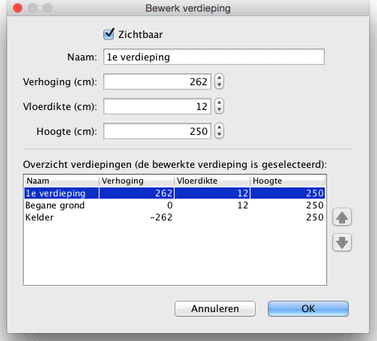

Je kunt de naam, de verhoging en de hoogtes van een verdieping wijzigen door op het betreffende tabblad te dubbelklikken, of te kiezen voor Plattegrond > Bewerk verdieping....
In het wijzigingspaneel van een verdieping kun je de eigenschappen aanpassen, maar daar wordt ook een tabel getoond waarin alle verdiepingen van het huis staan. De geselecteerde rij geeft de verdieping weer die momenteel wordt bewerkt.

De dikte van de vloer wordt gebruikt om de verticale rand rond de vloer te berekenen in het 3D-beeld. Dit oppervlak is aichtbaar rond openingen in de vloer en aan de rand van een tussenverdieping of een balkon.
De verhoging van een verdieping kan positief of negatief zijn. In het laatste geval zal de grond automatisch worden afgegraven in het 3D-beeld wanneer er een meubelstuk, een ruimte of een gesloten set muren wordt toegevoegd aan de ondergrondse verdieping. Deze functie kan worden gebruikt om een zwembad in de grond te plaatsen of om een kelder te maken met een of meerdere verdiepingen. |